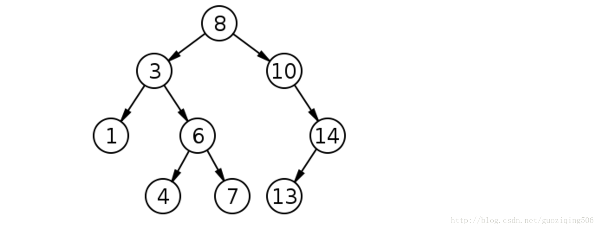
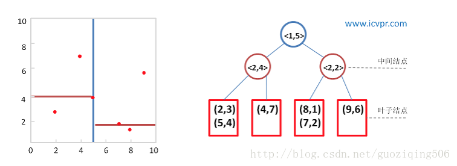
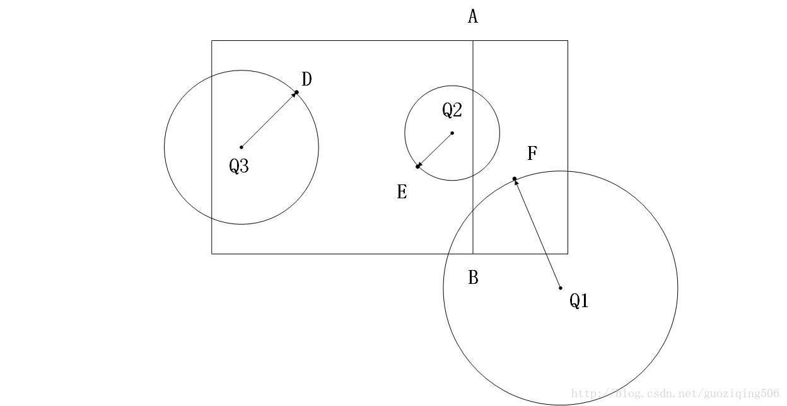

Kd-tree原理与实现
数据应用当中，最近邻查询是非常重要的功能。不论是信息检索，推荐系统，还是数据库查询，最近邻查询(Nearst Neighbor Search)可谓无处不在。它要实现的是帮助我们找到数据中和查询最接近的一个或多个数据条目（前者叫NN search, 后者也叫kNN），其实本质上是一样的，此文中Kd-tree主要就是针对这种最近邻搜索问题。
1. 基本原理
其实，这种问题本来是很容易解决的，只要设计好了数据相似度的度量方法（有关相似度量的方法详细可参考我之前的博客：数据相似性的度量方法总结）计算所有数据与查询的距离，比较大小即可。但是随着数据量的增大以及数据维度的提高，这种方法就很难在现实中应用了，因为效率会非常低。解决此类问题的思路基本分为两类：
（1）通过构建索引，快速排除与查询相关度不大的数据；
（2）通过降维的方法，对数据条目先降维，再查询；
前者主要是为了解决数据量过大的问题，比较常见的有我们熟知的二叉搜索树，Merkel tree，B-tree，quad-tree等；后者主要是为了解决维度过大的问题。
而我们今天要说的Kd-tree就是一种对多维欧式空间分割，从而构建的索引，属于上面的第一类。
Kd-tree全称叫做：k dimension tree，这是一种对于多维欧式空间分割构造的的二叉树，其性质非常类似于二叉搜索树。我们先回顾一下二叉搜索树，它是一种具有如下特征的二叉树：
（1）若它的左子树不为空，则左子树上所有结点的值均小于它的根结点的值；
（2）若它的右子树不为空，则右子树上所有结点的值均大于它的根结点的值；
（3）它的左、右子树也分别为二叉搜索树；
这个概念是数据结构基础的东西，应该非常熟悉了，不再赘述，下面给出一棵普通的二叉搜索树的图：

如果我们把二叉搜索树所对应的数据集看做一个一维空间（因为这个数据集的每一个数据条目都是由一个单一的数值构成的），那么实际上二叉搜索树的分割依据就是数值的大小，这样的划分，帮助我们以平均O(lg(n))的时间复杂度搜索数据。
自然而然，我们会祥这样一个问题，能不能在多维欧式空间中，构建一棵类似原理的二叉搜索树？这也就是我们今天说的Kd-tree.
2. kd-tree的构建
先抛开搜索算法怎样设计这件事不管，我们单纯地关心怎样对多维欧式空间划分。一维空间简单，因为每个数据条目只有一个数值，我们直接比较数值大小，就能对这些数据条目划分，可是在多维空间就存在一个关键问题：每个数据条目由多个数值组成，我们怎么比较？
Kd-tree的原理是这样的：我们不比较全部的k维数据，而是选择其中某一个维度比较，根据这个维度进行空间划分。那接下来，我们需要做的是两件事：
判断出在哪一个维度比较，也就是说，我们所要切割的面在哪一个维度上。当然这种切割需要遵循一个基本要求，那就是尽量通过这个维度的切割，使得数据集均分（为二）；
判断以哪个数据条目分依据划分。上面我们说，要使得数据集均分为二，那当然要选择一个合适的数据项，充当这个划分的“点”。
总结一下，就是要选择一个数据项，以这个数据项的某个维度的值为标准，同一维度的值大于这个值的数据项，划分为一部分，小于的划分为另一部分。根据这种划分来构建二叉树，就如同二叉搜索树那样。
现在，针对上面的两件事，我们需要做如下两个工作：
确定划分维度：这里维度的确定需要注意的是尽量要使得这个维度上所有数据项数值的分布尽可能地有大方差，也就是说，数据在这个维度上尽可能分散。这就好比是我们切东西，如果你切的是一根黄瓜，当让横着切要比竖着切更容易。所以我们应该先对所有维度的数值计算方差，选择方差最大的那个维度；
选择充当切割标准的数据项：那么只需要求得这个维度上所有数值的中位数即可；
至此，可以设计出kd-tree的构建算法了：
对于一个由n维数据构成的数据集，我们首先寻找方差最大的那个维度，设这个维度是d，然后找出在维度d上所有数据项的中位数m，按m划分数据集，一分为二，记这两个数据子集为D_1,D_r。建立树节点，存储这次划分的情况（记录划分的维度d以及中位数m）；
对D_l,D_r重复进行以上的划分，并且将新生成的树节点设置为上一次划分的左右孩子；
递归地进行以上两步，直到不能再划分为止（所谓不能划分是说当前节点中包含的数据项的数量小于了我们事先规定的阈值，不失一般性，我在此篇博客中默认这个阈值是2，也就是说所有叶子节点包含的数据项不会多于2条），不能再划分时，将对应的数据保存至最后的节点中，这些最后的节点也就是叶子节点。
现在可以给出kd-tree的实现代码。当然，首先需要设计几个函数，供算法调用，限于篇幅，这里只是给出功能说明：
| 类或函数 | 作用 |
|---|---|
| class-KdTreeNode | kd-tree节点，包含以下6个Attributes |
| Attribute1-data | 树节点属性，代表这个节点的数据项，其实是一个列表，如果不是叶子节点，则为空 |
| Attribute2-split | 树节点属性，代表构建树时，对这个节点进行分割所依据的数据维度 |
| Attribute3-median | 树节点属性，代表构建树时，所有上面split维度上数据的中位数 |
| Attribute4-left | 树节点属性，代表左孩子 |
| Attribute5-right | 树节点属性，代表右孩子 |
| Attribute6-parent | 树节点属性，代表父亲节点，作用是在后面的搜索算法中用 |
| Attribute7-visited | 树节点属性，代表此节点是否被算法回溯遍历，作用是在后面的搜索算法中用 |
| func-getSplit | 函数，得到所有维度中方差最大那个维度的序号 |
| func-getMedian | 函数，得到要分割的维度的中位数 |
按照上面这样设计，就可以实现kd-tree的构建了。我们这里使用numpy库，假设现在已经将所有的数据项读入为一个ndarray型的数据矩阵datamatrix，datamatrix的每一行代表了一个数据项。那么构建树算法的实现代码可以如下所示：
import numpy as np
# 树节点类和其相关方法如下
class KdTreeNode(object):
def __init__(self, dataMatrix):
self.data = dataMatrix
self.left, self.right = None, None
self.parent = None
self.split = self.getSplit()
self.median = self.getMedian()
self.visited = False
def getSplit(self):# 取方差最大的维度作为分割维度，代码略
def getMedian(self):# 得到这个分割维度上所有数值的中位数，代码略
# 构建kd-tree的函数，helper为其辅助函数，起到递归的作用
def buildKdTree(dataMatrix):
root = KdTreeNode(dataMatrix)
# there is only one data item in dataMatrix
if root.data.shape[0] <= 1:
return root
helper(root)
return root
def helper(root):
if root is None or len(root.data) <= 2:
return
# distribute data into left and right
leftData, rightData = [], []
# generate left and right child
for row in list(root.data):
if row[root.split] <= root.median:
leftData.append(row)
else:
rightData.append(row)
left = KdTreeNode(np.array(leftData))
left.parent = root
right = KdTreeNode(np.array(rightData))
right.parent = root
root.data = None
root.left = left
root.right = right
helper(root.left)
helper(root.right)
测试样例：数据集合(2,3), (5,4), (9,6), (4,7), (8,1), (7,2):

3. 搜索算法
构建好kd-tree后，就可以执行搜索算法了。其实，这也是信息检索最常见的模式，先构建索引，然后依照索引执行搜索算法。当然几乎所有的搜索算法都与其索引是配套的，也就是说，即便是同样的数据，索引不同，其搜索算法就不同，而各有各的技巧。这也是信息检索技术最大的魅力之一。
闲话少说，看搜索算法。基本思路可分为如下3步：
依照非叶节点中存储的分割维度以及中位数信息，自根节点始，从上向下搜索，直到到达叶子。遍历的原则当然是比较分割维度上，查询值与中位数的大小，设查询为Q，当前遍历到的节点为u，则若
Q[u.split] > u.median，继续遍历u的右子树，反之，遍历左子树。遍历到叶子之后，计算叶子节点中与查询Q距离最小的数据项与查询的距离，记为
minDis；其后执行“回溯”操作，回溯至当前节点的父节点，判断以Q为球心，以minDis为半径的超球面是否与这个父节点的另一个分支所代表的区域有交集（其实，这里的区域就是一个超矩形，它包含了所有这个节点代表的数据项）。如果没有，继续向上一层回溯；如果有，则按照1步继续执行，探底到叶子节点后，如果此时Q与这个叶子节点中的数据项有更小的距离，则更新minDis。持续进行以上两步，直到回溯至根节点，且根节点的两个分支都被“探测”过为止。
但是这个里面有一个难点：如何判断以查询Q为球心，以当前的minDis为半径的超球面与树中，一个非叶节点所代表的超矩形是否相交？
一种简单的方法是在构建树的时候直接给每个节点赋值一个超矩形，这个超矩形以一个树节点属性的形式存在。一般情况下是给出超矩形的一个最大点和一个最小点。判断的方法只需要看如下的两个条件是否都成立即可：
Q[u.split] + minDis >= minPoint[u.split]Q[u.split] - minDis >= maxPoint[u.split]
其中，u为查询当前遍历到的节点的父节点，minPoint与maxPoint为u所代表的超矩形的最大点和最小点（所谓最大最小点，那二维空间的矩形来说，就是他的右上角的点和左下角的点，分别拥有这个矩形范围内各个维度上的最大值和最小值）
原因很简单，因为以Q为球心，以当前这个矩形区域的一个点为球面上一点的一个超球面，一定是经过了当前这个叶子所代表的区域，但是同时它不可能完全覆盖他的兄弟节点代表的区域。这个道理听上去有点乱，看下面这个图就能明白：

图中，Q1,Q2,Q3是三个查询点，线段AB是这个矩形空间的分割情况。可见，上面的结论书成立的，同时，我们还可以得到一个观点：只要|Q[u.split] - u.median|<= minDis那么就是与其兄弟节点所代表的区域相交。其实这个道理也可以通过数学上的推导得到，如果不能理解的话一试便知。
说道这里，可以给出搜索算法的实现代码了：
import math
# 计算两个多维向量的欧式距离
def dis(item, query):代码略
# 回溯，找寻需要处理的下一个节点，下一节点应满足不曾被算法回溯遍历
def findNextNode(cur):代码略
# 判断以查询为球心，以此时的最小距离minDis为半径的超球面是否与节点所代表的超矩形相交
def intersect(node, query, radius):代码略
# 找到节点的兄弟节点
def getBrother(node):代码略
def search(root, query, result, minDis):
cur = root
# the root is None
if not cur:
return result
# find leaf
elif not cur.visited:
while cur.left and cur.right:
if query[cur.split] >= cur.median:
cur = cur.right
else:
cur = cur.left
# update the min dis if it is necessary
for item in list(cur.data):
tempDis = dis(item, query)
if abs(tempDis - minDis) < 1e-9:
result.append(list(item))
elif tempDis < minDis:
minDis = tempDis
result = [list(item)]
# update the visited
cur.visited = True
# process the next node
cur = findNextNode(cur)
if intersect(cur, query, minDis):
return search(cur, query, result, minDis)
else:
cur.visited = True
nextNode = findNextNode(cur)
return search(nextNode, query, result, minDis)
else:
return result
依照算法的设计，我们以上面的kd-tree的图为例，可以看看搜索算法遍历的顺序：
查询点(8, 3)自根节点起，按照分割维度以及中位数向下遍历，找到叶子节点(9, 6)，此时算得的最小距离为 ；
回溯，找到下一个需要处理的节点，也就是(8,1), (7,2)这个点（此时以(8,3)为圆心，以为半径的圆与这个点所代表区域相交），数据项 (7,2)与查询(8, 3)的距离更近，为 ，更新最小距离为；
回溯，此时，非叶节点<2, 2="">这个点所在的分支已经被访问过了，找到下一个需要处理的节点，<2, 4="">这个点。不过计算距离发现，这个点所代表的区域并不与此时的圆相交，放弃对这一分支的搜索； 回溯至根节点，并且此时根节点的两个分支都被考虑了，搜索结束，返回最近邻(7, 2)，最短距离是